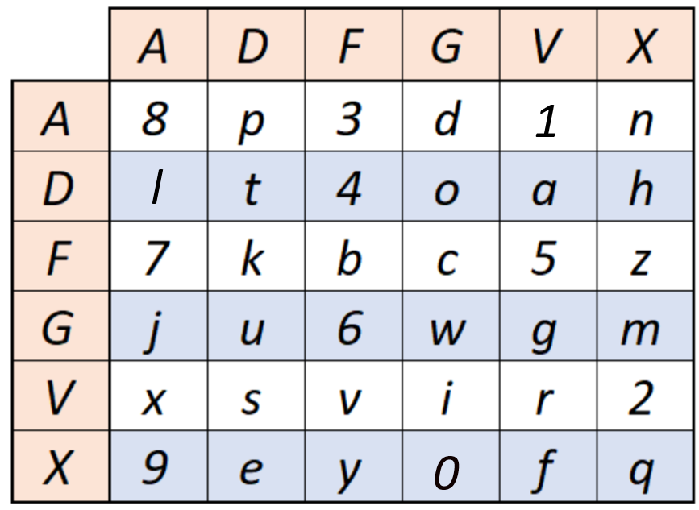
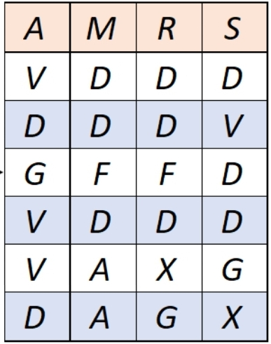
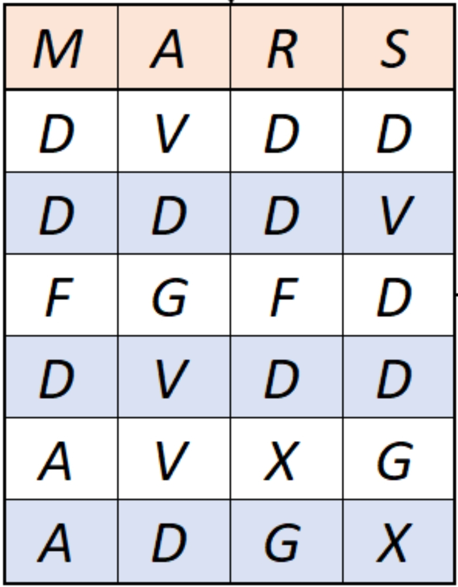
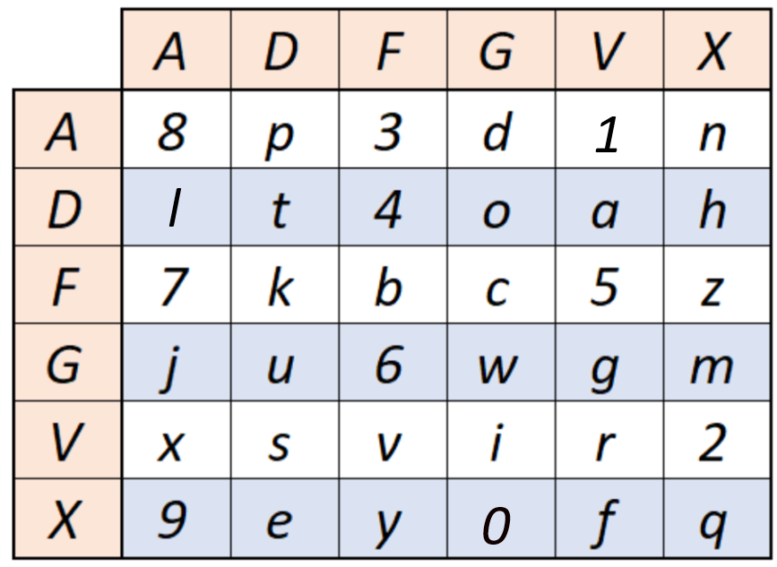
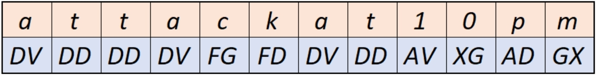

Пример расшифрования:
Пусть нам надо расшифровать текст: "VDGVVDDDFDAADDFDXGDVDDGX".
Таблица замены определена следующим образом:

А ключом является слово “MARS”.
Длина ключа = k = 4
Длина шифртекста = n = 24
Следовательно, заполняем таблицу с 4 столбцами и 24/4+1=7 строками. В первой строке выписываем буквы ключевого слова в алфавитном порядке, т.е. AMRS, в остальные ячейки таблицы выписываем шифртекст по столбцам слева направо, в каждом столбце сверху вниз.

Далее расставляем столбцы таблицы так, чтобы в первой строке получился заданный ключ и построчно выписываем текст из таблицы, разбивая на биграммы.

Получим следующие биграммы: DV DD DD DV FG FD DV DD AV XG AD GX.
Каждую биграмму заменяем на букву в соответствии со следующей таблицей замены.

Например, биграмме DV соответствует буква a, потому что D определяет строку (вторая), а V – столбец (пятый). Повторяем операцию для остальных биграмм и получим расшифрованный текст:
